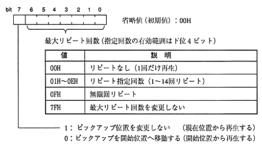

Title | Data | Data Name | No |

constant name | description |
|---|---|
CDC_PM_DFL | Play mode default value |
CDC_PM_REP_NOCHG | Do not change the maximum number of repeats |
CDC_PM_PIC_NOCHG | Do not change pickup position |
CDC_PM_NOCHG | Do not change playback mode (maximum repeat count, pickup position) |
Execute playback after seeking to start playback from any position. If you execute this during 〈PLAY〉, you can change the playback range and the maximum number of repeats without interrupting CD playback.
If the current position is out of the playback range as a result of execution, repeat processing is performed.